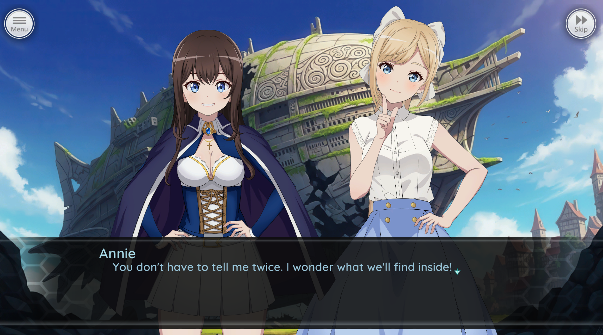
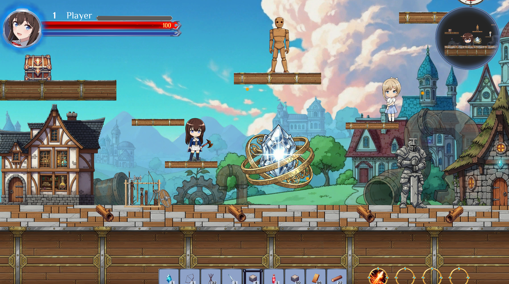

Overview
Annie's Quest is a side-scrolling 2D platformer built as a personal portfolio project in Unity. The project focuses on tight player movement, readable combat feel, expressive character presentation, and a set of supporting systems that make the core platforming loop feel complete rather than prototype-level.
Alongside traversal and spell combat, the game explores light base-building and progression ideas while keeping the moment-to-moment experience grounded in responsive controls and fast feedback.
My Role: Solo Developer
I built Annie's Quest as a solo portfolio project to explore how strong platforming feel, readable combat, and expressive character work could support a more complete side-scrolling game loop.
- Gameplay Programming & Systems Design (C#)
- UI/UX Design & Implementation
- Spine2D animated characters
- Sprite characters with various poses and expressions
- Story and dialogue implementation
- Sound design & integration
- Game and level design
- Project management & version control (Git)
Key Systems
To make movement feel responsive and fair, I implemented a set of platformer-friendly jump systems that focus on readability, forgiveness, and player control:
Acceleration curves
Instead of instant max speed, jumps ramp up velocity over the first few frames, making movement feel more responsive and natural.
Gravity scaling
Different gravity values depending on context, such as stronger gravity when falling or reduced gravity while holding jump for variable heights.
Input buffering
If the player presses jump slightly before landing, the game remembers that input briefly and executes it on touchdown.
Coyote time
You can still jump for a few frames after walking off a ledge, which makes platforming feel more forgiving and fair.
Jump buffering
The same buffering logic reduces missed inputs and keeps platforming from feeling punishing when timing is slightly early.
Hit stop
When an attack lands, both player and enemy pause for a few frames to add weight and impact to combat feedback.
Design Decisions
The main design goal was to avoid the stiffness that often makes early platformer prototypes feel unfinished. Systems like coyote time, buffering, gravity tuning, and hit stop were added not as extras, but as core pieces of the player's sense of control.
That same thinking shaped the rest of the project: expressive character work, readable spells, and supporting progression systems all exist to reinforce the fantasy without muddying the core movement loop.
Tools & Technologies
In-Game Gallery



Get In Touch
Thanks for checking out Annie's Quest. I'm always happy to talk through the project, the systems behind it, or related opportunities.